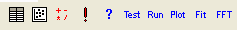
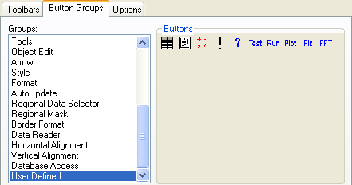
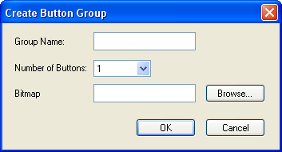
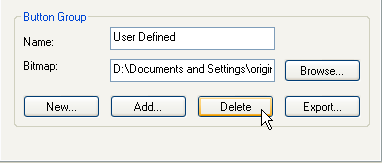

Benutzerdefiniert und Benutzerdefinierte Symbolleisten und Symbolleistenschaltflächen
Origin enthält eine standardmäßige Schaltflächengruppe mit dem Namen Benutzerdefiniert. Diese Schaltflächen können individuell ausgewählt werden und an Ihr Skript/Ihren Code angehängt werden, um Ihnen Zugriff über die Symbolleiste auf Ihre benutzerdefinierten Routinen zu gewähren. Origin ermöglicht es Ihnen zusätzlich, neue Schaltflächengruppen mit Hilfe Ihrer eigenen Bitmaps zu erstellen.
Anzeigen oder Verbergen von Symbolleisten
Sie verwenden das Dialogfeld Anpassen , um Symbolleisten anzuzeigen oder zu verbergen.
Um Origin-Symbolleisten anzuzeigen oder zu verbergen:
- Wählen Sie im Origin-Menü Ansicht: Symbolleisten.
- Wählen Sie die Registerkarte Symbolleiste, wählen Sie dort die Symbolleisten aus, die angezeigt werden sollen, während Origin ausgeführt wird, und klicken Sie auf Schließen.
Programmieren einer benutzerdefinierten Schaltflächengruppe, um eine benutzerdefinierte Aufgabe durchzuführen
Die Schaltflächengruppe Benutzerdefiniert beinhaltet 10 nicht-vorprogrammierte Symbolleistenschaltflächen, die verbunden und dazu verwendet werden können, Ihre benutzerdefinierten Aufgaben auszuführen.
- 
Um der Schaltflächengruppe Benutzerdefiniert eine benutzerdefinierte Aufgabe zuzuweisen:
- Öffnen Sie das Dialogfeld Anpassen (Ansicht: Symbolleisten) und wählen Sie die Registerkarte Schaltflächengruppen aus.
- Wählen Sie die Schaltflächengruppe Benutzerdefiniert aus der Liste Kategorien aus.
- 
- Wählen Sie eine Schaltfläche aus der Gruppe Schaltfläche.
- Klicken Sie auf die Schaltfläche Ändern in der Gruppe Schaltfläche. Dies öffnet das Dialogfeld Eigenschaften Schaltfläche.
- Bearbeiten Sie das Dialogfeld Eigenschaften Schaltfläche und klicken Sie auf OK , um die Programmierung Ihrer benutzerdefinierten Schaltfläche erfolgreich abzuschließen.
Erstellen einer Schaltflächengruppe, die benutzerdefinierte Aufgaben ausführt
Zusätzlich zum Programmieren von Schaltflächen in der Schaltflächengruppe Benutzerdefiniert können Sie Gruppen an benutzerdefinierten Schaltflächen zu Origin hinzufügen. Dazu gibt es drei Methoden:
Methode 1: Erstellen einer neuen Schaltflächengruppe
- Klicken Sie auf die Schaltfläche Neu in der Schaltflächengruppe Kategorie. Dies öffnet das Dialogfeld Kategorie erstellen.
- 
-
Bestimmen Sie...
- Kategoriename der Schaltfläche. Falls Sie den Namen einer bereits existierenden Schaltflächengruppe eingeben, wird Origin Sie auffordern, die bestehende Gruppe umzubenennen, zu verbinden oder zu ersetzen.
- Die Anzahl an Schaltflächen in der Gruppe (die maximale Anzahl an Schaltflächen innerhalb einer Gruppe beträgt 50).
- Die Datei Bitmap für die Schaltfäche(n) Die Bitmap muss eine 16 Farben-Bitmap sein. Außerdem sollten die Bitmaps aus einem 16x16-Pixel-Segment für jede Schaltfläche Ihrer benutzerdefinierten Schaltflächengruppe bestehen. Falls Sie beispielsweise eine 5er-Schaltflächengruppe erstellen möchten, muss Ihre Bitmap 16 Pixel in der Höhe und 80 Pixel in der Breite betragen. Origin wird die Bitmaps mit Hilfe der Angabe Anzahl an Schaltflächen analysieren.
- Klicken Sie auf OK. Wenn alle eingegebenen Informationen gültig sind, öffnet Origin das Dialogfeld Speichern unter. Standardmäßig erscheint der Gruppenname im Textfeld Dateiname.
- Klicken Sie auf Speichern, um Ihre neuen Gruppeneinstellungen in der bestimmten Initialisierungsdatei zu speichern.
Nachdem diese Schritte abgeschlossen sind, erscheint Ihre neue Schaltflächengruppe im Listenfeld Kategorien (auf der Registerkarte Befehle des Dialogfelds Symbolleiste anpassen). Sie können nun die Schaltflächeneinstellungen für die Schaltflächen Ihrer Gruppe wie beim oben beschriebenen Verfahren -- Programmieren einer benutzerdefinierten Schaltflächengruppe, um eine benutzerdefinierte Aufgabe durchzuführen -- anpassen.
Methode 2: Kopieren einer benutzerdefinierten Schaltflächengruppe eines anderen Origin-Anwenders in Ihren Origin-Programmordner
Eine benutzerdefinierte Schaltflächengruppe (inklusive der Gruppe Benutzerdefiniert) besitzt:
- Eine zugehörige Initialisierungsdatei (.INI)
- Die Initialisierungsdatei wird erstellt, wenn Sie auf die Schaltfläche Neu in der Gruppe Kategorie klicken und dann die Dialogfelder Schaltflächengruppe Kategorie erstellen und Speichern unter bearbeiten.
Eine Bitmap-Datei
- Eine Bitmap-Datei wird im Dialogfeld Kategorie erstellen erzeugt. Diese Information wird dann an die Initialisierungsdatei der Schaltflächengruppe angehängt.
Eine LabTalk-Skriptdatei (OGS) und beliebige Hilfedateien
Die LabTalk-Skriptdateien werden für jede Schaltfläche in der Gruppe in dem entsprechenden Dialogfeld Eigenschaften Schaltfläche angegeben. Diese Information wird dann an die Initialisierungsdatei der Schaltflächengruppe angehängt.
Falls ein anderer Origin-Anwender (beispielsweise ein Anwender in Ihrem Netzwerk) eine benutzerdefinierte Kategorie besitzt, auf die Sie Zugriff haben möchten:
- Kopieren Sie die benutzerdefinierte .INI-Datei, Bitmap-Datei und die LabTalk-Skriptdateien plus alle Hilfedateien in Ihren Origin-Ordner.
- Starten Sie Ihr Origin(Pro).
- Wählen Sie im Menü Ansicht: Symbolleisten und wählen Sie die Registerkarte Befehle.
- Klicken Sie in der Schaltflächengruppe Kategorie auf Hinzufügen. Dies öffnet das Dialogfeld Kategorie hinzufügen.
- Geben Sie den Pfad zu der .INI-Datei der Schaltflächengruppe an und klicken Sie dann auf die Schaltfläche OK. Die neue Schaltflächengruppe wird nun in der Liste Kategorie angezeigt.
Beachten Sie, dass der bevorzugte Weg zum Ausführen von Schaltflächengruppen darin besteht, eine .OPX-Datei zu erstellen (siehe Methode 3).
Methode 3: Installieren von Schaltflächengruppen, die in eine .OPX-Datei exportiert wurden
- Installieren Sie Schaltflächengruppen, die in eine .OPX-Datei exportiert wurden.
Verändern einer benutzerdefinierten Schaltflächengruppe
Die Bedienelemente der Registerkarte Schaltflächengruppen des Dialogfelds Symbolleiste anpassen (Ansicht: Symbolleisten) ermöglichen es Ihnen, die Bitmap für die benutzerdefinierten Schaltflächengruppen zu entfernen oder zu verändern und die Schaltflächen aus der benutzerdefinierten Schaltflächengruppe zu entfernen oder Schaltflächen hinzuzufügen.
- Um eine Schaltfläche zu einer benutzerdefinierten Schaltflächengruppe hinzuzufügen:
- Wählen Sie die gewünschte Gruppe aus dem Listenfeld Gruppen aus.
- Geben Sie einen neuen Pfad und Dateinamen in das Textfeld Bitmap ein oder klicken Sie auf die Schaltfläche Durchsuchen, um die neue Bitmap-Datei zu finden.
|
Hinweis: Sie können auch die Bitmap für die Kategorie Benutzerdefiniert bearbeiten.
|
- Um eine Schaltfläche aus einer benutzerdefinierten Schaltflächengruppe zu entfernen:
- Wählen Sie die Schaltfläche aus, die Sie entfernen möchten.
- Klicken Sie auf die Schaltfläche Löschen in der Gruppe Schaltfläche.
- Um eine benutzerdefinierte Schaltflächengruppe zu entfernen:
- Wählen Sie die Schaltflächengruppe, die Sie entfernen möchten, aus dem Listenfeld Gruppen aus.
- Klicken Sie auf die Schaltfläche Löschen in der Gruppe Schaltflächengruppe.
- 
- Eine Warnmeldung bittet um Bestätigung, bevor die Gruppe entfernt wird.
- Wenn Sie auf Ja klicken, entfernt Origin die benutzerdefinierte Schaltflächengruppe aus dem Listenfeld Gruppe.Wenn eine von diesen Schaltflächen aus dieser (entfernten) Gruppe in Symbolleisten eingefügt wurden, funktionieren diese Schaltflächen nicht mehr, nachdem Sie die Gruppe entfernt haben.
|
Hinweis: Sie können keine standardmäßigen Schaltflächengruppen entfernen.
|
- Um die Bitmap für eine benutzerdefinierte Kategorie zu verändern:
- Wählen Sie die gewünschte Gruppe aus dem Listenfeld Gruppen aus.
- Geben Sie einen neuen Pfad und Dateinamen in das Textfeld Bitmap ein oder klicken Sie auf die Schaltfläche Durchsuchen, um die neue Bitmap-Datei zu finden.
|
Hinweis: Sie können auch die Bitmap für die Kategorie Benutzerdefiniert bearbeiten.
|